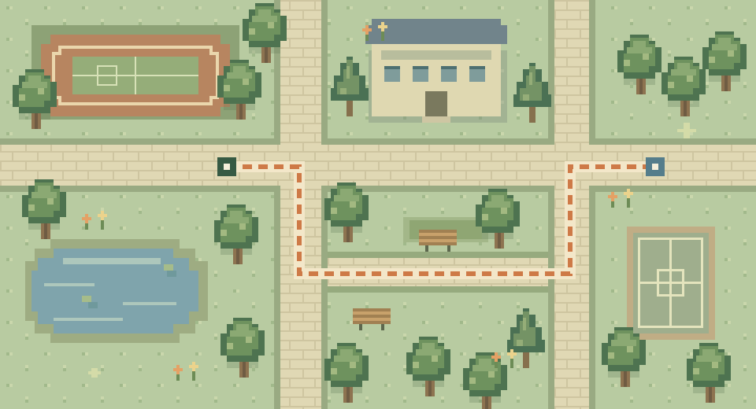

這一段路1.28 km
距離隨模擬運動更新
A LITTLE MOVEMENT, A NEW CHAPTER.
照自己的節奏，收集一段屬於你的校園路線。
這是可操作的視覺範本。使用示範數據，不啟用定位，也不儲存你的運動紀錄。

綠蔭步道按下開始，看看像素介面如何回應。
LOOK BACK AT YOUR JOURNEY
距離隨模擬運動更新
由你選擇步行或跑步
不寫入正式運動紀錄
ENERGY BREAKDOWN
示範數字隨模擬速度、時間與設定體重更新。
這個範本不模擬定位缺口。
正式版會保存有效點、篩選原因與斷段事件。這張像素地圖只是風格示意，沒有接收 GPS。
THE LITTLE DETAILS
#293E35#FAF6E5#D57B45#9FB787#718FA1英數保留復古節奏，中文使用清楚的現代字體。地圖、角色與圖示保持清晰硬邊。
滑過浮起，按下落地；鍵盤也能操作。試試上方分頁，以及這裡的遊戲視窗。